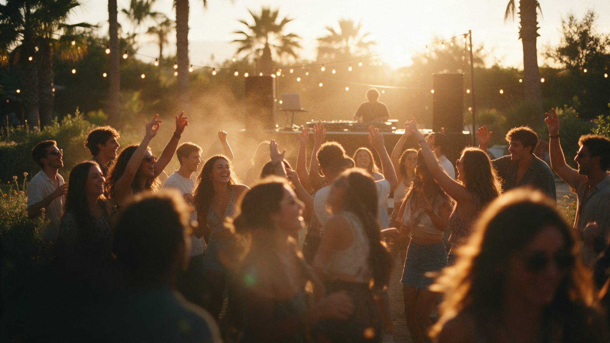
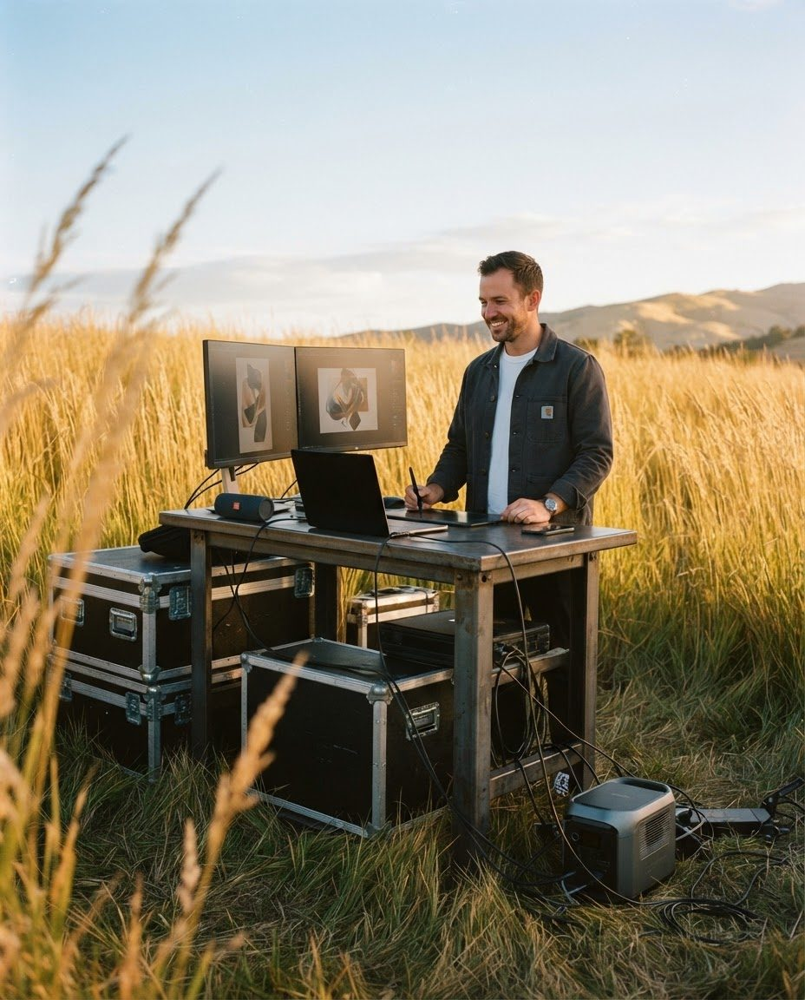

01
El Calentón
Fiesta de música latina. Hacemos su identidad y los teasers de video que anuncian cada line up.
Estudio creativo en Buenos Aires. Marcas, contenido y eventos.
Puede ser linda, brillante y mega presentable, y no servir para nada. Por eso primero entendemos y después diseñamos.

Fiesta de música latina. Hacemos su identidad y los teasers de video que anuncian cada line up.
Un manual de marca interactivo para que la identidad se use igual en la planta, en la oficina y en la web.
Videos con creadoras de contenido para cada lanzamiento de fragancia.
Más trabajos, a pedido.
Que se reconozca a una cuadra. Y que nadie le ponga Comic Sans.
Publicar por publicar es ruido. Decidimos qué decir y cuándo, y lo producimos.
Del teaser al after, para que se hable antes, durante y después.

“No se me ocurría ningún nombre. Al final le borré una parte a mi apellido y quedó Eiro.”
Por eso, cuando alguien nos dice “capaz es una boludez”, prestamos más atención. Vos nos contás tu idea; nosotros la hacemos marca.
Contanos y lo charlamos. El café lo invitamos nosotros.
Contestamos rápido, salvo que estemos en medio de un evento.